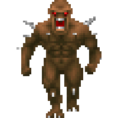

[[fetch]]
files = ["engine.py"]
import js, math, time
from pyodide.ffi import create_proxy
from engine import DoomGame, SCREEN_WIDTH, SCREEN_HEIGHT, CASTED_RAYS, MAP, FOV, MAX_DEPTH
# 전역 객체 초기화
ui_container = js.document.getElementById("ui-container")
status_text = js.document.getElementById("status-text")
restart_btn = js.document.getElementById("restart-btn")
canvas = js.document.getElementById("gameCanvas")
ctx = canvas.getContext("2d")
# 미니맵 관련 객체
mm_canvas = js.document.getElementById("minimapCanvas")
mm_ctx = mm_canvas.getContext("2d")
# 이미지 로드 (캐싱)
monster_img = js.Image.new()
monster_img.src = "images/doom_imp.png"
weapon_img = js.Image.new()
weapon_img.src = "images/pistol.png"
game = DoomGame()
pressed_keys = set()
def restart_game(event):
game.init_game()
ui_container.style.display = "none"
restart_btn.onclick = create_proxy(restart_game)
def on_keydown(event): pressed_keys.add(event.key.lower())
def on_keyup(event):
if event.key.lower() in pressed_keys: pressed_keys.remove(event.key.lower())
js.window.addEventListener("keydown", create_proxy(on_keydown))
js.window.addEventListener("keyup", create_proxy(on_keyup))
def get_all_sprites():
"""몬스터와 아이템을 모두 합쳐서 거리순으로 정렬하기 위한 리스트 생성"""
sprites = []
# 1. 활성화된 몬스터 추가
for m in game.monsters:
if m.is_alive:
sprites.append({
"x": m.x, "y": m.y,
"img": js.document.getElementById("monster_img"), # 기존 몬스터 이미지
"type": "MONSTER"
})
# 2. 활성화된 아이템 추가
for item in game.items:
if item.is_active:
sprites.append({
"x": item.x, "y": item.y,
"img": js.document.getElementById(item.image_id),
"type": "ITEM"
})
return sprites
def draw_minimap():
# 미니맵 캔버스 초기화 + 원형 마스킹 설정
mm_ctx.clearRect(0, 0, 160, 160)
mm_ctx.save() # 현재 상태 저장
mm_ctx.translate(80, 80) # 캔버스 중심을 레이더 중앙으로 이동
mm_ctx.beginPath()
mm_ctx.arc(0, 0, 80, 0, math.pi * 2) # 중앙(80,80)에 반지름 80인 원 생성. 레이더 중심에 플레이어 고정.
mm_ctx.clip() # 이후 그려지는 모든 것은 이 원 안으로 제한됨 = 기본 사각형 미니맵을 원형으로 자름
# 레이더 회전 설정
# 플레이어가 보는 방향이 항상 '위쪽'이 되도록 지도를 반대로 회전시킵니다.
# 플레이어 아이콘을 고정 한 채, 움직이는 방향에 따라 지도를 회전시킬 수 있다.
mm_ctx.rotate(-game.player_angle - math.pi/2)
# 핵심: 실제 타일 1개(50px)가 미니맵에서 가질 크기 (예: 20px)
# 이 값을 고정하면 계산이 훨씬 정확해집니다.
GRID_SIZE = 16
# 월드 좌표를 미니맵 크기로 변환하는 비율 (20 / 50 = 0.4)
WORLD_TO_MM = GRID_SIZE / 50
# 플레이어 고정 레이더는 연산량이 많기 때문에 주의.
p_col = int(game.player_x / 50)
p_row = int(game.player_y / 50)
# 1. 벽 그리기
# 성능을 위해 플레이어 주변 타일만 루프를 돌림. (범위 제한)
mm_ctx.fillStyle = "rgba(0, 255, 0, 0.25)"
render_range = 6 # 주변 6타일까지만 표시 -> 성능 최적화에 필수.
for r in range(max(0, p_row - render_range), min(len(MAP), p_row + render_range)):
for c in range(max(0, p_col - render_range), min(len(MAP[0]), p_col + render_range)):
if MAP[r][c] == 1:
# 플레이어와의 상대적 거리 계산 (상대 좌표 방식)
# 타일의 왼쪽 상단 꼭짓점을 기준으로 플레이어와의 상대 거리를 계산
rel_x = (c * 50) - game.player_x
rel_y = (r * 50) - game.player_y
# 타일 한 칸을 정확히 GRID_SIZE 크기로 그림
mm_ctx.fillRect(
rel_x * WORLD_TO_MM,
rel_y * WORLD_TO_MM,
GRID_SIZE,
GRID_SIZE
)
# 2. 몬스터 표시
for m in game.monsters:
if m.is_alive:
# 몬스터 중심 좌표
rel_mx = m.x - game.player_x
rel_my = m.y - game.player_y
# 너무 먼 몬스터는 그리지 않음
dist_sq = rel_mx**2 + rel_my**2
# 레이더 가시거리 내 있는지 확인
if dist_sq < 400**2:
# 몬스터 점 그리기
mm_ctx.fillStyle = "#ff0000"
mm_ctx.strokeStyle = "#fff" # 흰색 외곽선을 주어 벽과 구분
mm_ctx.lineWidth = 1
mm_ctx.beginPath()
# WORLD_TO_MM 비율을 곱해 정확한 위치에 점을 찍음
mm_ctx.arc(rel_mx * WORLD_TO_MM, rel_my * WORLD_TO_MM, 4, 0, math.pi * 2)
mm_ctx.fill()
mm_ctx.stroke() # 외곽선 추가로 벽과 겹쳐도 식별 가능하게 함
for item in game.items:
if item.is_active:
rel_ix = item.x - game.player_x
rel_iy = item.y - game.player_y
if (rel_ix**2 + rel_iy**2) < 400**2:
# 아이템 종류에 따라 색상 구분 (총알: 황금색, 체력: 파란색)
mm_ctx.fillStyle = "#ffd700" if item.type == "AMMO" else "#00ffff"
mm_ctx.beginPath()
mm_ctx.arc(rel_ix * WORLD_TO_MM, rel_iy * WORLD_TO_MM, 3, 0, math.pi * 2)
mm_ctx.fill()
mm_ctx.restore() # 회전 및 이동 상태 초기화
# 3. 플레이어 표시 (원형 레이더 내 고정된 중앙 화살표)
mm_ctx.save()
mm_ctx.translate(80, 80)
mm_ctx.fillStyle = "#0f0"
mm_ctx.shadowBlur = 10; mm_ctx.shadowColor = "#0f0"
# 위를 향하는 삼각형 (플레이어 표시)
mm_ctx.beginPath()
mm_ctx.moveTo(0, -7)
mm_ctx.lineTo(-5, 5)
mm_ctx.lineTo(5, 5)
mm_ctx.closePath()
mm_ctx.fill()
mm_ctx.restore()
# 4. 레이더 격자선 + 스캔 효과
mm_ctx.strokeStyle = "rgba(0, 255, 0, 0.2)"
mm_ctx.beginPath()
mm_ctx.arc(80, 80, 40, 0, math.pi * 2) # 내부 동심원
mm_ctx.stroke()
mm_ctx.beginPath()
mm_ctx.moveTo(80, 0); mm_ctx.lineTo(80, 160)
mm_ctx.moveTo(0, 80); mm_ctx.lineTo(160, 80)
mm_ctx.stroke()
def draw_scene():
global z_buffer
z_buffer = [MAX_DEPTH] * SCREEN_WIDTH
# 1. 배경 (그라데이션 효과 대신 단순화하여 성능 확보)
ctx.fillStyle = "#1a1a1a" # 천장
ctx.fillRect(0, 0, SCREEN_WIDTH, SCREEN_HEIGHT // 2)
ctx.fillStyle = "#333" # 바닥
ctx.fillRect(0, SCREEN_HEIGHT // 2, SCREEN_WIDTH, SCREEN_HEIGHT // 2)
# 2. 레이캐스팅 벽 렌더링
wall_results = game.cast_rays()
# 소수점 오차를 줄이기 위해 정확한 폭 계산
ray_step = SCREEN_WIDTH / CASTED_RAYS
for i, wall in enumerate(wall_results):
dist = wall['dist']
h = wall['height']
start_x = int(i * ray_step)
end_x = int((i + 1) * ray_step)
for x in range(start_x, min(end_x, SCREEN_WIDTH)):
z_buffer[x] = dist
# 거리에 따른 그림자 효과
shade = min(180, dist * 0.4)
color = int(200 - shade)
ctx.fillStyle = f"rgb({color}, {color}, {color})"
# 핵심: ray_width에 +1.2 정도를 더해 인접한 벽끼리 미세하게 겹치게 하여
# 계단 현상과 흰 선(틈새)을 동시에 방지 -> 픽셀이 겹치도록 보정
ctx.fillRect(i * ray_step - 0.5, (SCREEN_HEIGHT - h) // 2, ray_step + 1.2, h)
# 3. 몬스터 + 아이템 렌더링 (Z-Buffer 최적화 검사)
all_sprites = get_all_sprites()
sprite_data = []
for s in all_sprites:
dx = s["x"] - game.player_x
dy = s["y"] - game.player_y
dist = math.sqrt(dx**2 + dy**2)
# 플레이어 앞쪽에 있는지 확인 (단순 거리 컷오프)
if dist < 20: continue
# 상대 각도 계산
sprite_angle = math.atan2(dy, dx) - game.player_angle
# 각도 정규화
while sprite_angle > math.pi: sprite_angle -= 2 * math.pi
while sprite_angle < -math.pi: sprite_angle += 2 * math.pi
if abs(sprite_angle) < 1.2: # 시야각(FOV) 내에 있을 때만
sprite_data.append({
"dist": dist,
"angle": sprite_angle,
"img": s["img"],
"type": s["type"]
})
# 거리에 따라 정렬 (먼 것부터 그려야 함)
sprite_data.sort(key=lambda x: x["dist"], reverse=True)
for s in sprite_data:
# 렌더링 위치 및 크기 계산 (몬스터 로직과 동일)
screen_x = (0.5 * (s["angle"] / (FOV / 2)) + 0.5) * SCREEN_WIDTH
idx = int(screen_x)
# [핵심] 인덱스가 화면 가로 폭(0 ~ SCREEN_WIDTH-1) 안에 있는지 엄격히 체크
# Z-Buffer 체크: 벽에 가려지는지 확인
if 0 <= idx < SCREEN_WIDTH:
if z_buffer[idx] > s["dist"]:
if s["type"] == "ITEM":
sprite_scale = 20 # 숫자가 작을수록 아이템이 작아집니다
bobbing = math.sin(time.time() * 5) * 10
y_offset = 50 + bobbing # 아이템이 작아진 만큼 바닥에 붙이려면 이 값을 키우세요
else:
sprite_scale = 40 # 몬스터는 기존 크기 유지
y_offset = 20
sprite_size = (SCREEN_HEIGHT / s["dist"]) * sprite_scale
# 이미지 그리기
ctx.drawImage(
s["img"],
screen_x - sprite_size / 2,
(SCREEN_HEIGHT / 2) - sprite_size / 2 + y_offset, # 아이템과 바닥으로부터의 거리
sprite_size,
sprite_size
)
# 4. 조준점
ctx.strokeStyle = "#0f0"; ctx.lineWidth = 2
ctx.beginPath()
ctx.moveTo(SCREEN_WIDTH/2-10, SCREEN_HEIGHT/2); ctx.lineTo(SCREEN_WIDTH/2+10, SCREEN_HEIGHT/2)
ctx.moveTo(SCREEN_WIDTH/2, SCREEN_HEIGHT/2-10); ctx.lineTo(SCREEN_WIDTH/2, SCREEN_HEIGHT/2+10)
ctx.stroke()
# 4-1. 총알 부족 메시지 (조준점 바로 위 배치)
if game.ammo <= 0:
ctx.fillStyle = "#ff0000" # 붉은색 경고
ctx.font = "bold 20px Arial"
ctx.textAlign = "center"
# 조준점 중앙(SCREEN_WIDTH/2)에서 약간 위(SCREEN_HEIGHT/2 - 20)에 배치
ctx.fillText("NO AMMO", SCREEN_WIDTH / 2, SCREEN_HEIGHT / 2 - 25)
# 5. 무기 & 뷰 보빙
if weapon_img.complete:
recoil = game.flash_frames * 12
bob_y = math.sin(game.walk_timer) * 10
bob_x = math.cos(game.walk_timer * 0.5) * 6
w_w = SCREEN_WIDTH * 0.25 # 무기 크기 조절
w_h = w_w * (weapon_img.height / weapon_img.width)
ctx.drawImage(weapon_img,
(SCREEN_WIDTH - w_w) / 2 + 150 + bob_x,
SCREEN_HEIGHT - w_h + 20 + recoil + bob_y,
w_w, w_h)
# 6. UI (텍스트)
# 체력 수치 백분율 계산
health_percent = int((game.player_health / game.MAX_HEALTH) * 100)
# 체력 수치 표시
ctx.fillStyle = "#fff"; ctx.font = "bold 22px Arial"; ctx.textAlign = "left"
ctx.fillText(f"❤️ HEALTH: {health_percent}%", 30, 45)
# 체력에 따라 색상 변경 (경고 효과)
if health_percent <= 30:
ctx.fillStyle = "#ff0000" # 30% 이하일 때 빨간색
elif health_percent <= 60:
ctx.fillStyle = "#ffff00" # 60% 이하일 때 노란색
else:
ctx.fillStyle = "#00ff00" # 그 외 녹색
# 수치 옆에 간단한 체력 바(Bar) 생성.
ctx.fillRect(30, 55, health_percent * 2, 10) # ctx.fillRect(x, y, width, heigth) -> 체력바 크기 조절 참고
# 남아있는 몬스터 수치
alive_count = sum(1 for m in game.monsters if m.is_alive)
ctx.fillStyle = 'rgb(185, 50, 217)'
ctx.fillText(f"👾 MONSTERS LEFT: {alive_count}", 30, 85)
# 좌측 하단 총알 UI 표시
# 화면 높이(SCREEN_HEIGHT)에서 약 40px 위 지점
ctx.fillStyle = "#ffd700" # 총알은 황금색으로 강조
ctx.fillText(f"🔫 AMMO: {game.ammo}", 30, SCREEN_HEIGHT - 40)
draw_minimap() # 미니맵 전용 함수 호출
# 7. 피드백 효과
if game.damage_frames > 0:
ctx.fillStyle = f"rgba(255, 0, 0, {game.damage_frames / 15})"
ctx.fillRect(0, 0, SCREEN_WIDTH, SCREEN_HEIGHT)
game.damage_frames -= 1
if game.flash_frames > 0:
ctx.fillStyle = f"rgba(255, 255, 255, {game.flash_frames / 5})"
ctx.fillRect(0, 0, SCREEN_WIDTH, SCREEN_HEIGHT)
game.flash_frames -= 1
# 8. 게임 상태 UI 트리거
if game.game_state != "PLAYING":
ui_container.style.display = "flex"
if game.game_state == "GAMEOVER":
status_text.innerText = "YOU DIED"; status_text.style.color = "#f00"
else:
status_text.innerText = "MISSION COMPLETE"; status_text.style.color = "#ff0"
def main_loop(*args):
if game.game_state == "PLAYING":
game.update_player(pressed_keys)
if ' ' in pressed_keys:
pressed_keys.remove(' ')
if not game.ammo:
game.flash_frames = 0
print("No Ammo!")
else:
game.flash_frames = 5
game.attack_monster()
game.update_items()
draw_scene()
js.requestAnimationFrame(create_proxy(main_loop))
main_loop()